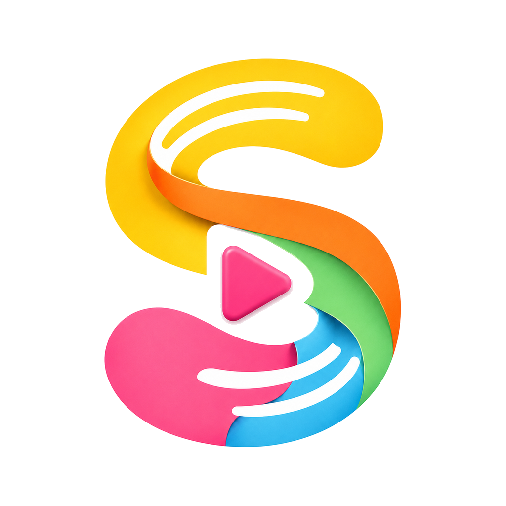
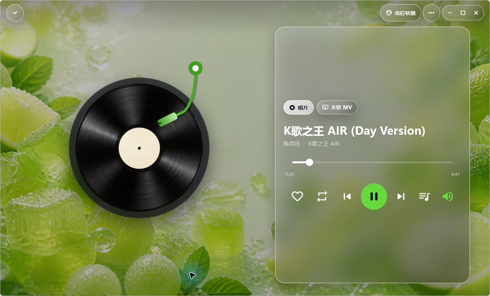
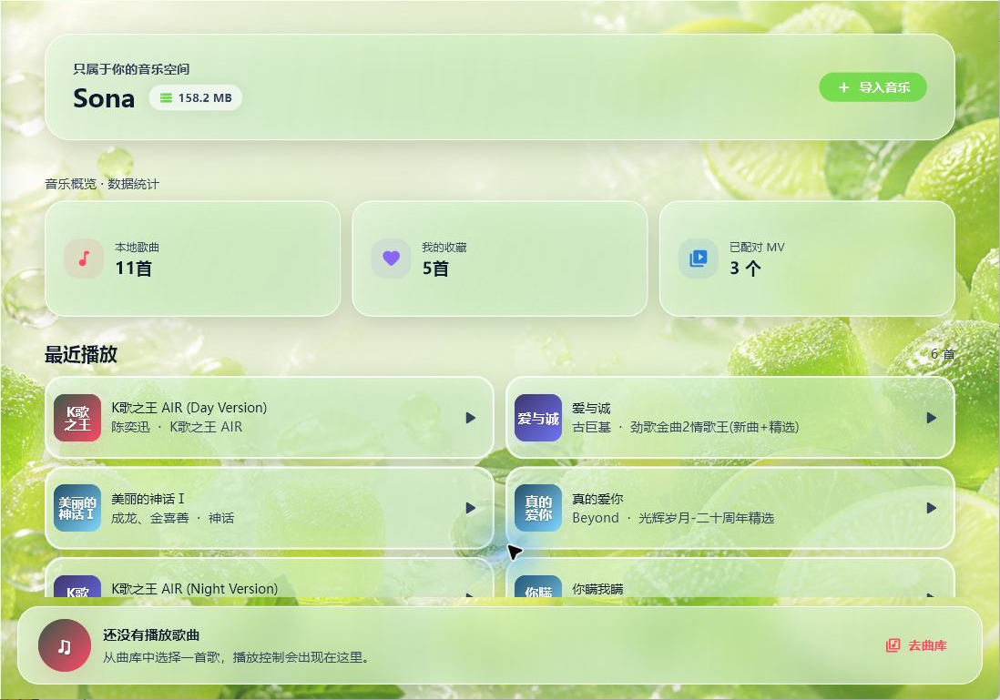

LOCAL FIRST
无网照常播放
本地曲库、播放队列、歌单、收藏与记录不依赖网络。云端不可用时，应用会明确提示，但不会拖垮本地体验。

SonaWindows · Android · 公开预览
Sona 是一款本地优先、离线可用的音乐播放器。它把音乐、MV、播放队列、智能整理和个性化主题放进同一个安静、顺手的空间。

为什么是 Sona
Sona 从一开始就围绕本地文件设计：先让播放可靠，再把云同步当作增强，而不是依赖。你的音乐库保存在本机 SQLite 数据库中，扫描、收藏、歌单和播放记录都能在离线状态继续工作。
核心亮点
从导入一首歌，到连续播放、整理、识别、收藏，再到 MV 与完整播放页，Sona 尽量让每一步都像一个完整产品，而不是功能拼盘。
LOCAL FIRST
本地曲库、播放队列、歌单、收藏与记录不依赖网络。云端不可用时，应用会明确提示，但不会拖垮本地体验。
AUDIO + VIDEO
自动识别媒体类型、关联唱片与 MV，队列切歌时同步更新播放界面。
SMART METADATA
结合标签、文件名清理、MusicBrainz，以及可选 Chromaprint / AcoustID 声纹回退，校准歌曲、歌手和专辑信息。
YOUR LIBRARY
同一首歌在不同入口保持一致的播放、右键与队列逻辑，快速找到真正想听的内容。
PERSONAL THEMES
液态毛玻璃、黑胶唱片、主题色联动与壁纸专属特效共同构成完整皮肤。选中态、文字对比度和控制器会随主题适配。
真实界面
以下画面直接采集自 Windows 版本。青柠软糖主题只是其中一种外观，应用内还可以切换多套壁纸、色彩与特效。

技术路径
Sona 使用 Flutter 构建双端体验，以 SQLite 保存本地资料，通过 SHA-256 去重，并对网络、云端读取与连续切歌做了防抖、取消与失败回退。
查看公开源代码 ↗歌曲信息识别流程
隐私与边界
本地数据库音乐文件与核心资料保存在你的设备上。
可选识别服务只有主动识别时才请求公开音乐资料服务。
公开预览同步能力仍在持续加强，重要音乐请保留本地备份。
开始使用
Sona 0.4.50 公开预览版。无需订阅，下载即用。
当前为公开预览版。Android APK 使用开发签名，系统可能提示“未知来源”；请只从本页面或 GitHub Release 下载。